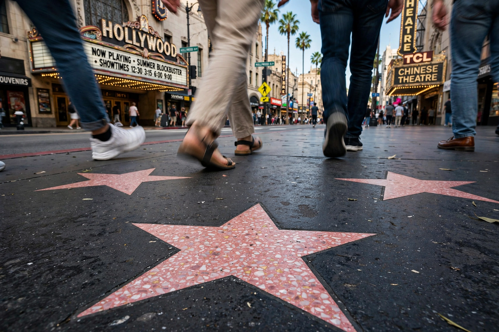

| Hollywood Walk of Fame | |
|---|---|
| Location | Hollywood Boulevard and Vine Street, Hollywood, Los Angeles |
| Established | 1960 |
| Administered by | Hollywood Chamber of Commerce / Hollywood Historic Trust |
| Number of stars | More than 2,800 |
| Categories | Motion pictures, television, radio, recording, live theatre/performance, sports entertainment, radio |
The Hollywood Walk of Fame is a landmark which consists of more than 2,800 five-pointed terrazzo-and-brass stars embedded in the sidewalks along 15 blocks of Hollywood Boulevard and three blocks of Vine Street in the Hollywood district of Los Angeles, California. The stars, the first of which were permanently installed in 1960, are monuments to achievement in the entertainment industry, bearing the names of a mix of actors, musicians, producers, directors, theatrical/musical groups, athletes, fictional characters, and others.
The Walk was conceived in the 1950s by E. M. Stuart, volunteer president of the Hollywood Chamber of Commerce, as a promotional device for the district. The first eight prototype stars were unveiled in 1958, and the initial stars — honouring figures such as Joanne Woodward and Burt Lancaster — were installed beginning in 1960. Johnny Grant, the honorary "Mayor of Hollywood", chaired the selection committee for decades and became the face of the unveiling ceremonies.
Each star is a pink five-pointed terrazzo star rimmed with brass, inlaid into a charcoal-coloured terrazzo background, with the honouree's name in brass block letters and a round bronze emblem indicating the category of contribution: a motion picture camera (film), a television set, a phonograph record, a radio microphone, or theatre masks (later joined by a sports trophy emblem). Gene Autry is the only person honoured with stars in all five original categories. Selections are made annually by committee from public nominations, and honourees (or their sponsors) pay a fee toward installation and maintenance.
Dolby Theatre · Grauman's Chinese Theatre · Capitol Records Building · Hollywood Bowl